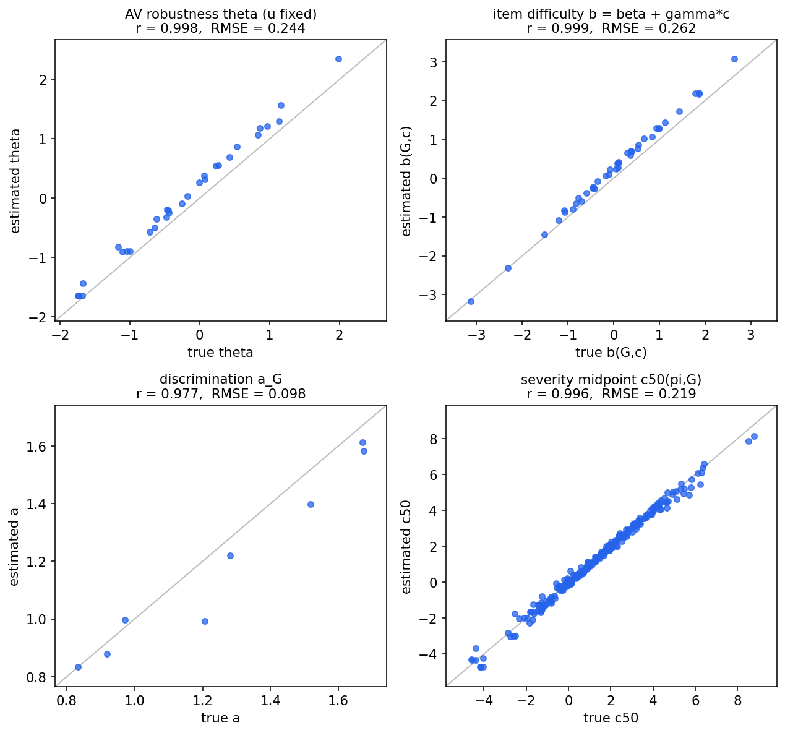
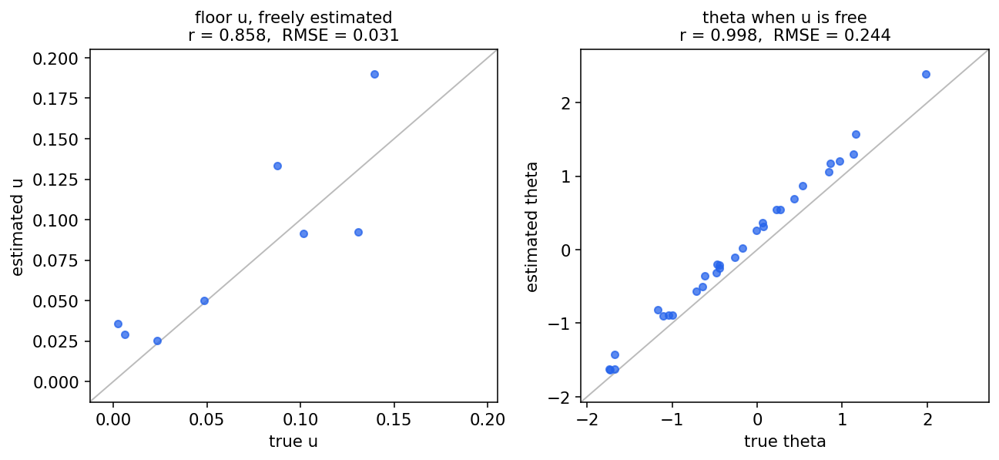
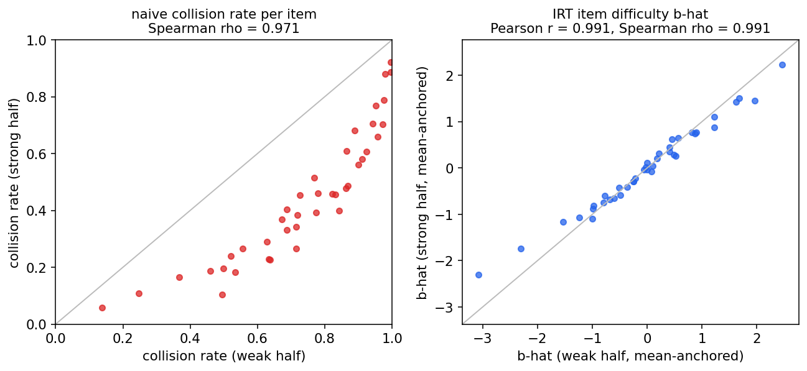

모의 데이터 복원 실험: 우리 모델은 추정 가능한가
참값을 알고 만든 모의 응답에 방법 형식화의 전체 모델(식 6)을 적합해 보았다. 답은 "그렇다"이다. 강건성 θ·난이도 b·변별력 a·중간점 c₅₀가 상관 0.98~0.999로 복원되고, 서로 겹치지 않는 두 AV 집단으로 따로 보정해도 난이도가 같은 값으로 나온다(표본불변, r=0.991). 단 회피불가 하한 u는 데이터만으로는 약하게 식별되어, RSS 같은 외부 라벨로 주는 편이 안전하다. 코드는 analysis/a1-identifiability/에 있다.
무엇을 물었나
모델이 아무리 그럴듯해도, 데이터에서 모수가 실제로 분리되어 추정되지 않으면 쓸 수 없다. 통계에서 이를 식별가능성(identifiability)이라 한다. 점검하는 표준적인 방법은 단순하다. 참값을 우리가 정해 두고 그 모델로 가짜 응답을 만든 뒤, 그 응답만 보고 추정해 참값이 돌아오는지 보는 것이다(복원 실험, parameter recovery). 시험 비유로는, 출제자가 문항 난이도를 알고 일부러 답안지를 만들어 본 다음 채점 이론이 그 난이도를 되찾는지 확인하는 셈이다. 여기서 우리가 물은 것은 셋이다. 모수들이 복원되는가, 회피불가 하한 u까지 데이터만으로 복원되는가, 그리고 핵심 주장인 표본불변(누구로 보정해도 난이도가 같음)이 유한한 데이터에서 실제로 보이는가.
실험 설계
모델은 method.html 식 (6) 그대로다: 충돌 확률 = uG + (1−uG)·σ(aG(βG + γGc − θπ)). AV 30대(θ ~ N(0,1)), 생성기 8개(기본 난이도 β, severity 기울기 γ, 변별력 a, 하한 u를 생성기마다 다르게), severity 5수준(c = 0~4), 그리고 한 칸당 30회 반복으로 총 36,000개의 0/1 응답을 만들었다. 반복이 들어가는 이유가 곧 반응성이다. 같은 (AV, 생성기, 강도) 칸이라도 매 주행의 전개가 달라 결과가 흔들리므로, 칸 하나가 동전 던지기 여러 번에 해당한다. 전체 충돌률은 0.591로 중간 범위에 오게 맞췄다(이게 왜 중요한지는 아래 교훈에서).
추정은 MAP(최대 사후) 방식이다. 베이지안 추정의 가장 가벼운 형태로, θ에 "평균 0, 표준편차 1" 사전분포를 둬 척도를 고정하고 나머지 모수는 약한 정규화만 둔 채 우도를 최대화한다. 한 가지 기술적 처리가 있다. 이 모델은 a·(b−θ)라는 곱만 식별하므로 a를 줄이고 θ·b를 같은 비율로 늘려도 우도가 같다(척도 자유). 그래서 추정 뒤 θ̂를 평균 0·표준편차 1로 되돌리는 재표준화로 척도를 못 박았다. 이 자유의 좋은 증거가 c₅₀ = (θ−β)/γ인데, 비율이라 척도가 상쇄되어 아무 처리 없이도 치우침 없이 복원된다.
결과 1 · 모수가 복원된다 (u를 외부 라벨로 고정했을 때)
먼저 하한 u를 참값으로 고정했다. 실전에서 RSS 라벨로 회피불가 충돌의 몫을 알아낸 상황에 해당한다. 이때 네 모수 모두 깨끗이 돌아온다. 강건성 θ는 r=0.998(RMSE 0.24), 문항 난이도 b(G,c)는 r=0.999(0.26), 변별력 a는 r=0.977(0.10), 그리고 "몇 단계 severity까지 버티는가"인 c₅₀(π,G)는 r=0.996(0.22)이다. 즉 36,000개의 0/1 응답만으로, 그 뒤에 숨은 시나리오 난이도와 AV 강건성을 사실상 그대로 읽어낼 수 있다.

결과 2 · 하한 u의 식별은 설계에 달렸다
다음으로 u를 외부 라벨 없이 데이터에서 자유롭게 추정하게 했다. 결과는 method.html에 적어 둔 예상("데이터만으로는 약하게 식별될 수 있음")과 정확히 같았고, 거기에 조건이 하나 붙는다. u가 보이려면 충돌 확률이 하한(u) 근처까지 내려가는 칸, 곧 강한 AV가 낮은 severity를 만나는 쉬운 칸이 충분해야 한다. 처음에 전체 충돌률 0.78의 어려운 설계로 돌렸을 때 u의 복원 상관은 −0.13으로 사실상 무정보였다. 설계를 중간 범위(0.59)로 옮기자 r=0.857(RMSE 0.03)까지 살아났다. 흥미롭게도 u가 엉망일 때조차 θ·b의 복원은 r≈0.99로 거의 다치지 않았다. 정리하면, u는 가능하면 RSS 같은 외부 라벨로 고정하고, 데이터로 추정해야 한다면 격자에 쉬운 칸을 일부러 넣어야 한다.

결과 3 · 표본불변이 성립한다 (충돌률은 흔들린다)
핵심 주장을 모의 세계에서 직접 시험했다. AV 30대를 참값 θ 기준으로 약한 절반과 강한 절반으로 갈라, 서로 겹치지 않는 두 집단으로 문항 난이도를 따로 보정했다. 일부러 고른 가혹한 분할이다. 결과는 분명하다. 같은 문항의 충돌률이 약한 집단에서는 평균 0.74, 강한 집단에서는 0.44로, 누구로 쟀느냐에 따라 값이 크게 다르다(왼쪽 그림, 모든 점이 대각선 아래). 반면 IRT로 보정한 난이도 b̂는 두 집단에서 같은 값으로 돌아온다(오른쪽 그림, r=0.991, RMSE 0.22). 이것이 specific objectivity의 경험적 모습이고, 논문 D2 검증에서 진짜 AV 데이터로 다시 보일 그림의 원형이다.
한 가지를 정직하게 적어 둔다. 이 모의 세계에서 충돌률의 문항 순위 자체는 두 집단 사이에 대체로 보존됐다(Spearman 0.97). 모델이 1차원이고 변별력 차이가 완만해서다. 섹션 B에서 본 실세계의 순위 역전(LD-Scene·Shen)은 다차원성과 변별력·하한의 큰 이질성에서 오는 것으로, 진짜 데이터 실험(D1)에서 재현할 부분이다. 모의 실험이 보여주는 SUT 의존성은 값의 의존(같은 문항이 0.74로도 0.44로도 측정됨)이며, 이는 충돌률을 벤치마크 수치로 쓰는 순간 바로 문제가 된다.

설계 교훈 · 격자는 중간 범위에 걸쳐야 한다
이번 점검은 세 번 돌렸고, 그 차이 자체가 D-study(몇 개나 필요한가, method.html 9단계)의 첫 입력이 된다. 전체 충돌률이 0.78이던 첫 설계에서는 약한 집단의 많은 칸이 천장(거의 전부 충돌)에 붙었다. 모두가 틀리는 문항은 "매우 어렵다"는 것 말고는 난이도 정보를 주지 못하므로, u는 식별 불가(r=−0.13), 부분집단 보정 일치도 r=0.89에 그쳤다. 충돌률을 0.71로 낮추자 각각 0.67과 0.95로, 0.59로 낮추자 0.86과 0.99로 올라왔다. 결론은 시험 설계와 같다. 문항 정보는 정답률이 절반 근처일 때 최대이므로, 실제 격자(로드맵 C)도 severity 범위를 충돌률이 중간 범위에 걸치도록 잡아야 하고, u를 추정하려면 쉬운 칸을 일부러 포함해야 한다.
다음 단계
A1은 통과다. 다음은 로드맵의 A2(추정 절차 확정)다. 이번에는 가장 가벼운 MAP으로 점 추정만 했는데, 논문에서는 불확실성(난이도·강건성의 신뢰구간)까지 보고해야 하므로 계층 베이지안(Stan·PyMC)으로 같은 복원 실험을 반복해 구간 포함률(coverage)을 확인하는 것이 자연스러운 다음 한 걸음이다. 그다음 A3(공변량)·A4(라벨러)를 정하면 모델 쪽 준비가 끝나고 B(실험 인프라)로 넘어간다.